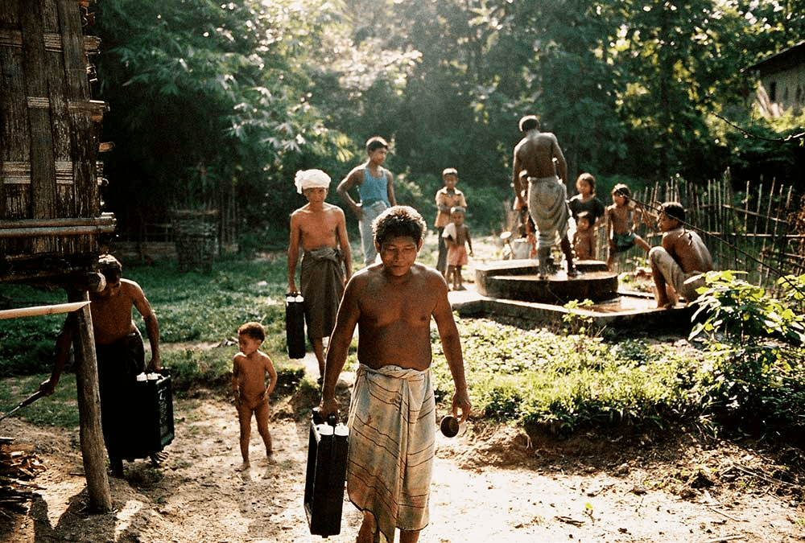
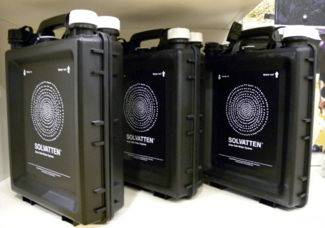

Solvatten, el bidón potabilizador sueco
Millones de mujeres y niños caminan decenas de kilómetros todos los días cargados con recipientes en los que transportan agua para cocinar. Solvatten es un invento sueco con apariencia similar a un bidón corriente y que sirve para disponer de agua limpia y caliente sin necesidad de energía eléctrica.
Para ello, emplean energía solar: los rayos ultravioletas destruyen los microorganismos del agua y la calientan hasta 75ºC, temperatura perfecta para cocinar, bañarse, lavarse las manos o limpiar la casa. Una vez el agua está depurada, es posible almacenarla para que se enfríe.
En la actualidad, la empresa sueca trabaja en más de 45 proyectos, principalmente en África, mejorando las condiciones de salud de más de 200.000 personas.
 
indice